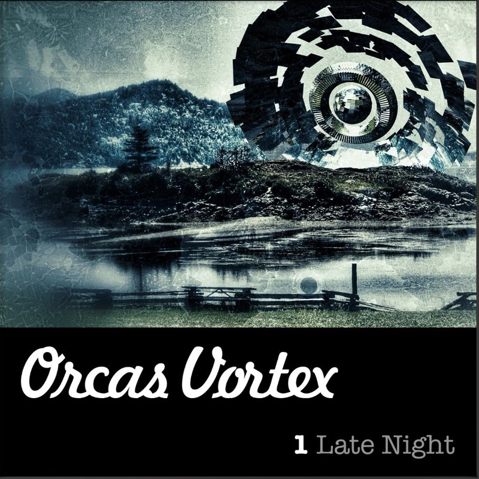
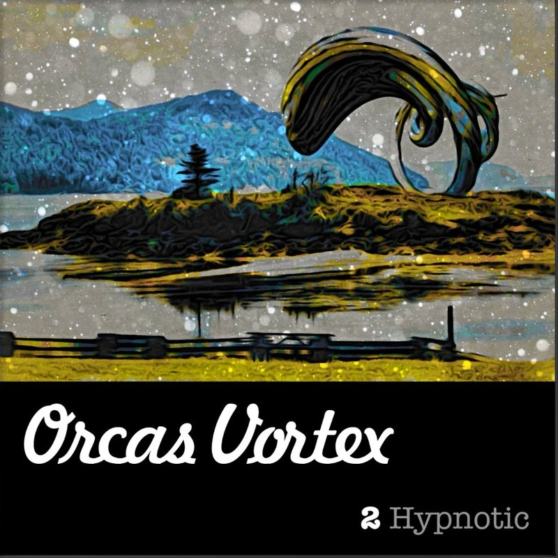
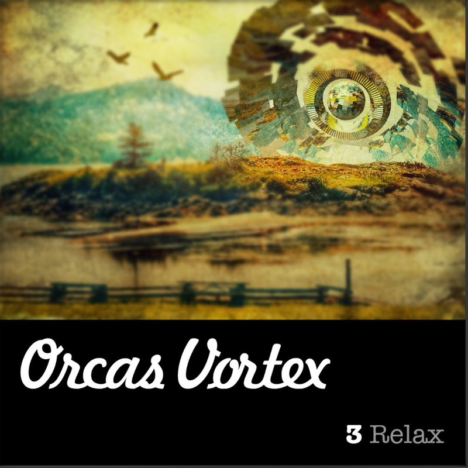
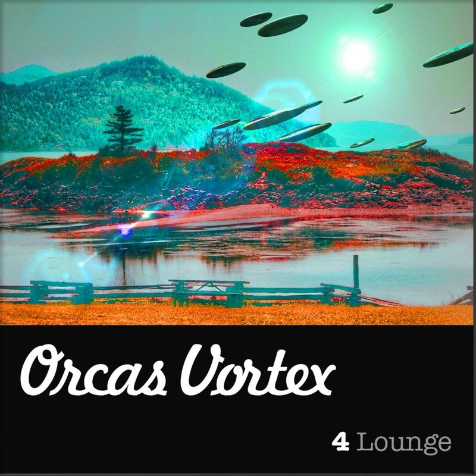

Orcas Island · Playlists
Orcas Vortex
Indian Island is a two-acre rock in Fishing Bay, just off Eastsound on Orcas Island. A few days a year a minus tide uncovers a path of sand and gravel, and for about two hours you can walk out to it.
Island lore places an Atlantean energy vortex somewhere in East Sound. Nobody has measured it. These four playlists assume it is there.
The covers date from the pandemic years: the same view of Indian Island, worked four ways.

1 Late Night Songs to softly land the night. Listen on Spotify ↗
2 Hypnotic Strange beats and eclectic textures full of energy. Listen on Spotify ↗
3 Relax Music to soothe and intrigue. Listen on Spotify ↗
4 Lounge Music to accompany martinis while being invaded by otherworldly beings. Listen on Spotify ↗